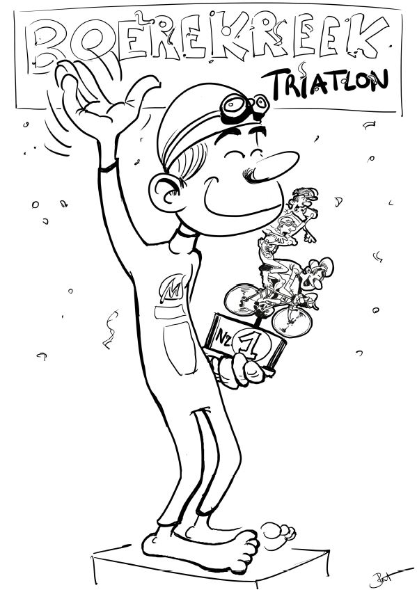

Illustrator Bert Van Waes uit Watervliet heeft enkele mooie kleurplaten gemaakt voor de kinderen. Iedereen die voor 1 juni een foto van zijn of haar creatie(s) mailt naar
boerekreektri@smo-specialized.be (o.v.v. naam, adres, leeftijd) of hem aan de infotent afgeeft, ontvangt een leuke attentie op de wedstrijddag. Natuurlijk vinden we het extra leuk als je je kleurplaat ook nog op sociale media deelt (voorzien van #boerekreektri #sportersbelevenmeer)! De winnaars krijgen een mooie prijs.
Alle kleurplaten krijgen op de wedstrijddag een mooi plaatsje op onze “ironkids wall”. Wie zelf een kleurplaat wil uitprinten kan hem downloaden op www.smo-specialized.be onder Boerekreektriatlon.